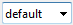

| Show the new name bar for add new Note. | |
| Remove the selected Note. | |
| Add new Note. | |
| Copy Url from TAB to name_new_note. | |
| Clear the NOTE content. | |
| Save the content NOTE in a external file. | |
| Load from external textfile the content in a NOTE. | |
|  | Select the NOTE. |
| Export all note to single text-file. | |
| Print the note. |